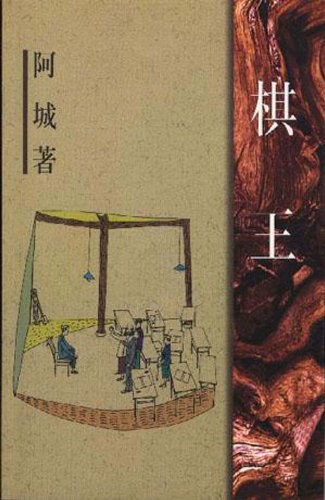

《棋王》

总体观点
《棋王》是1984年阿城震动中国文坛的处女作与成名代表作，被公认为新时期“寻根文学”的开山之碑。在知青文学普遍沉浸于苦难控诉与政治创伤叙事的时代，阿城另辟蹊径，将目光投向中国传统民间深处最浑厚、最坚韧的文化血脉——老庄道家哲学与平民世俗生活。小说主人公王一生是一个外表干瘪瘦小、出身城市贫民阶层的知青，却因对中国象棋的入魔痴迷被称为“棋呆子”。
全书以令人叹为观止的极简文字白描，构筑了两个截然不同却高度统一的生命维度：其一是“吃”，王一生对食物抱有一种近乎宗教般的至高虔诚与肃穆敬畏，他吃米饭时连掉在衣角与地面的米粒都要细细捡起咽下，用开水涮尽饭盒里的每一滴油花。阿城深刻指出：生存的第一要义就是填饱肚肠，不知饥渴之苦的人根本不配谈论崇高。其二是“棋”，在吃饱之后，象棋成为了他对抗庸常、安顿灵魂的神圣宇宙。他下棋不求功名、不争奖金，唯求在楚河汉界之中体会阴阳相生、借力打力的道家神韵。
小说的最高潮发生在大道朝天的农场集镇上——未能获得官方参赛资格的王一生，坐在满是灰尘的土街大树下，独自一人闭目冥想，同时与本届地区象棋大赛的前三名以及全区六位顶尖高手展开震撼全城的“盲棋以一敌九”世纪大战。数千名百姓在静默中屏息凝视，王一生面色铁青、双目失明般圆睁，最终以残局平局折服了坐着滑竿赶来的百岁老国手。阿城以惊天地泣鬼神的笔力证明：在最荒唐动荡的时代缝隙里，中国传统民间普通人凭借最质朴的吃食与最纯粹的艺术专注，依然能活出顶天立地、安详神圣的宗师气象。
核心观点
-
1. 食存感恩与生存哲学：对粮食的虔诚敬畏是人性的原初基石
脱离生存底线的形而上学是虚伪矫饰。每一粒大米、每一片肥肉都是维系肉身生命的至高神赐。懂得饥饿之苦，才能真正扎根生活大地。
“王一生吃完饭，把饭盒里外舔得干干净净，然后倒进半碗开水，晃荡晃荡，仰脖喝了下去……他看着空饭盒，脸上泛起一种庄严肃穆的神情。” -
2. 道家棋禅的阴阳太极：借力打力、重势不重子的古老智慧
象棋之道即是处世之道。贪图吃子必遭牵制，唯有把握全局气势流动、以柔克刚、避其锋芒并在无形处结网，方能达到羚羊挂角的大化之境。
老捡破烂的高手传授王一生棋心：“为棋不为生，为棋而造棋。胜固欣然，败亦可喜。不贪不躁，顺应其势，方得棋中三昧。” -
3. 无字棋子的精神母体：母亲用旧牙刷把磨出的无言守护
母亲临终前虽不识字且反对他下棋荒废生计，却在暗中将捡来的塑料牙刷柄一点点磨成一副毫无刻字的素面棋子，承载着底层母亲最深沉无声的关爱。
王一生从贴身衣服深处掏出一个磨破的旧布袋，倒出三十枚晶莹发亮却毫无红黑字迹的塑料圆棋：“我下盲棋，就摸这无字棋，心里踏实。” -
4. 一人战九人的宗师气象：小人物在狂欢盛典中的精神拔节
在官方体制剥夺其参赛资格的逼迫下，王一生孤身在民间街头设立考场。当精神专注达到化境时，枯瘦的肉身便升华为神明般不可侵犯的宏大丰碑。
街头万人空巷鸦雀无声，王一生在毒日头下双目紧闭微张，脑中同时悬空旋转着九盘变幻莫测的棋局，喉咙嘶哑地报出一步步惊心动魄的着数。 -
5. 何以解忧唯有寻根：中国普通劳动者内心的文化抗脆弱性
动荡时代的暴风雨可以砸碎殿堂庙宇，却无法吹熄深植于市井草民心中的文化火种。只要民间尚存对手艺的纯粹热爱，中华文明的脊梁便永远挺立。
百岁老国手被抬下轿子，双手颤抖抚摸着王一生的额头叹息：“老朽有幸得见今日！汇通阴阳，棋道未绝，中华棋道在尔辈年轻人矣！”
全书思维导图 · 知识脉络树
全书结构
-
第一部分：南下知青列车上的初遇与“吃”的圣礼
混乱喧嚣的知青车厢里，叙述者与“棋呆子”王一生初次相遇，以神来之笔描绘王一生对一盒米饭和一片肥肉的庄严进食过程。
王一生用食指精准按起掉在裤缝里的一粒米送入口中，神情专注得仿佛在举行古老的宗教祭祀，车窗外掠过茫茫北国荒原。 -
第二部分：农场出工、身世追忆与旧牙刷无字棋
转至云南边陲农场砍山开荒，两人深夜促膝长谈，揭开王一生自幼贫寒、向捡破烂老道人学棋，以及母亲临终磨制无字牙刷棋子的催泪往事。
王一生回忆寡母临终前将藏在枕头底下的碎布包塞进他手里，布包里是整整三十二颗磨光了棱角的塑料圆棋，抚摸着棋子泪如雨下。 -
第三部分：棋品见人品——脚卵的拉拢与拒绝权钱交易
富家知青“脚卵”倪斌试图用明代古董棋盘向公社书记行贿以换取王一生的参赛名额，遭到王一生的断然拒绝，坚持棋品不可染尘。
王一生平静推开那副价值连城的乌木象牙古董棋盘：“我不去。靠送东西换来的名次，赢了也是下作，我不下这种脏棋。” -
第四部分：一人战九人——街头盲棋大战与百岁老国手的礼赞
全书史诗高潮，王一生在街头老树下同时以盲棋对弈九位顶尖高手，力克全场并以平局敬重退隐老国手，轰动全区完成封神对决。
王一生双手扶膝坐在竹椅上，宛如一尊青铜塑像，当第九盘棋老国手主动提和时，王一生睁开血红的双眼喃喃自语：“和了……妈，和了。”